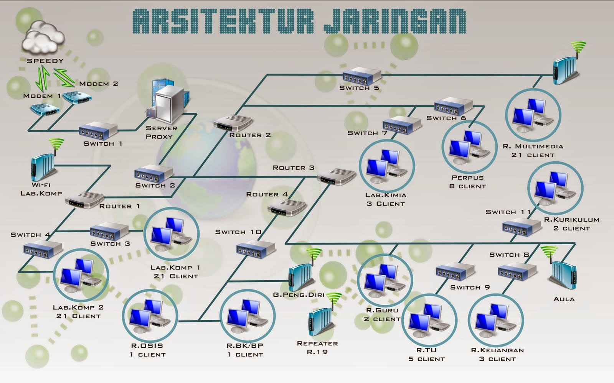

Drive Tugas Jaringan Komputer
Welcome To My Blog!
Halo! Saya Sava Aurellia Salsabila, NIM C2C023071, mahasiswa S1 Informatika di Fakultas Teknik dan Ilmu Komputer. Website ini dibuat sebagai bagian dari tugas Mata Kuliah Jaringan Komputer, yang membahas bagaimana komputer dan perangkat lain terhubung untuk berbagi data dan sumber daya. Dalam mata kuliah ini, Anda akan mempelajari berbagai aspek jaringan, mulai dari konsep dasar jaringan dan komunikasi data, jenis dan topologi jaringan (seperti LAN, WAN, dan MAN), hingga fungsi tiap lapisan pada model OSI, seperti Application, Transport, Network, dan Physical. Anda juga akan memahami media transmisi, baik kabel (serat optik, twisted pair) maupun nirkabel (Wi-Fi, satelit), teknik switching dan multiplexing, konfigurasi jaringan LAN dan WLAN, serta keamanan dan manajemen jaringan. Semua ini menjadikan jaringan komputer sebagai tulang punggung komunikasi data. Selamat menjelajahi dan semoga bermanfaat! 🎉
Berikut Adalah Beberapa Materi Jaringan Komputer
Jaringan komputer adalah jembatan yang menghubungkan dunia. 🌐 Dari berbagi data hingga komunikasi tanpa batas, semua dimulai dari dasar: pengantar jaringan dan komunikasi data. 🚀 Mari pahami teknologi yang menghubungkan kita semua!
BacaKabel atau nirkabel? 💻📡 Media transmisi adalah jalan utama bagi data untuk bergerak dari satu perangkat ke perangkat lain. Dari kecepatan serat optik hingga fleksibilitas Wi-Fi, semuanya mendukung koneksi tanpa batas! 🌐✨
Baca
Di balik setiap koneksi internet yang lancar, ada struktur dan arsitektur jaringan yang canggih! 🌐✨ Dari topologi sederhana hingga desain kompleks, jaringan komputer adalah fondasi komunikasi digital modern. Yuk, eksplorasi lebih dalam! 🚀
Baca